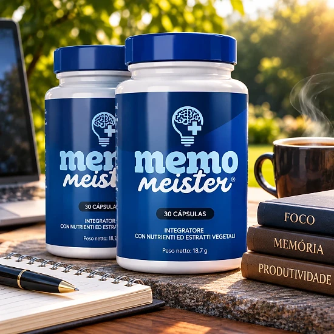
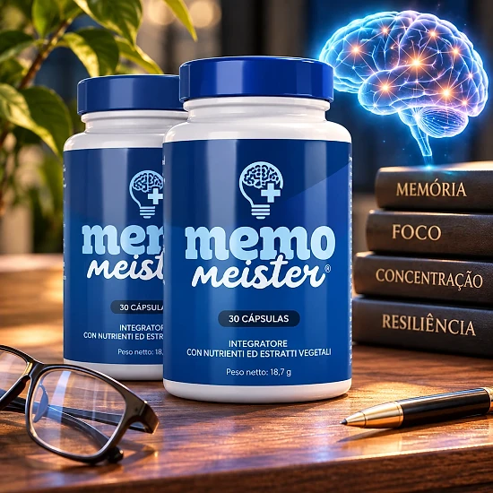
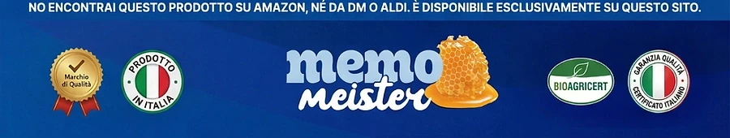

Che cos’è Memo Meister e come agisce?
Memo Meister è un integratore alimentare in capsule che il sito ufficiale presenta come un nootropico naturale. È pensato per accompagnare la memoria, la concentrazione e le capacità cognitive nella vita di tutti i giorni, partendo da nutrienti ed estratti vegetali selezionati.
L’etichetta italiana lo descrive come un «integratore con nutrienti ed estratti vegetali». Ogni flacone contiene 30 capsule, cioè un mese di utilizzo con una capsula al giorno, per un peso netto di 25,52 g.
La formula riunisce otto ingredienti: la vitamina B3 (niacina), lo zinco, la L-citrullina, la L-carnitina, un estratto di pino marittimo, un estratto di radice di maca, un estratto di buccia d’uva e un estratto di stimmi di zafferano.
Come agisce? Il sito ufficiale ricorda che lo zinco contribuisce alla normale funzione cognitiva e che la vitamina B3 contribuisce al normale metabolismo energetico. L’etichetta aggiunge che la niacina contribuisce a ridurre la stanchezza e l’affaticamento. Gli estratti di pino marittimo e d’uva sono fonti naturali di polifenoli, mentre la maca è una pianta tradizionale delle Ande.
L’approccio è graduale. Secondo il sito ufficiale, i primi effetti, come più energia e una migliore concentrazione, compaiono di solito dopo due o tre settimane di uso continuo, e il marchio consiglia un’assunzione di almeno 90 giorni per un supporto ottimale.
Secondo l’etichetta, Memo Meister è fabbricato negli Stati Uniti con ingredienti nazionali e di altri paesi, ed è distribuito nell’Unione europea da Digistore24 MSLW Limited, a Dublino, con un indirizzo per i resi nei Paesi Bassi.
Memo Meister resta un integratore alimentare: non è destinato a diagnosticare, trattare, curare o prevenire alcuna malattia, e il sito ufficiale precisa che le sue dichiarazioni non sono state valutate dall’EFSA. Non sostituisce un’alimentazione varia né uno stile di vita sano, e i risultati possono variare da persona a persona.
Memo Meister – Ingredienti
La tabella dei valori nutrizionali di Memo Meister indica la dose di ogni ingrediente per capsula. Ecco la composizione riportata sull’etichetta italiana e sul sito ufficiale:
Vitamina B3, come niacina (20 mg, 125% del VNR): contribuisce al normale metabolismo energetico e alla riduzione della stanchezza.
Zinco, come ossido di zinco (11 mg, 110% del VNR): contribuisce alla normale funzione cognitiva.
L-citrullina (150 mg) e L-carnitina (150 mg): aminoacidi presenti naturalmente nell’organismo.
Estratto di pino marittimo, Pinus pinaster (100 mg): fonte naturale di antiossidanti.
Estratto di radice di maca, Lepidium meyenii (50 mg): pianta tradizionale delle Ande.
Estratto di buccia d’uva (15 mg) ed estratto di stimmi di zafferano (5 mg): ricchi di polifenoli; lo zafferano è una spezia preziosa usata fin dall’antichità.
Gli altri componenti sono la capsula vegetale (ipromellosa), la cellulosa microcristallina e gli agenti antiagglomeranti. Solo la vitamina B3 e lo zinco hanno un valore nutrizionale di riferimento: per gli aminoacidi e gli estratti vegetali l’etichetta precisa che non è stato stabilito alcun VNR. Per gli allergeni, l’etichetta rimanda agli ingredienti indicati in grassetto.
Memo Meister – Effetti collaterali
Secondo il sito ufficiale, Memo Meister è formulato con ingredienti naturali ed è ben tollerato dalla maggior parte delle persone. Gli effetti collaterali vengono descritti come rari e di norma lievi, per esempio piccole modifiche digestive nei primi giorni di adattamento.
Alcune persone devono però astenersi. L’etichetta indica che il prodotto non è adatto a chi ha meno di 18 anni, né alle donne in gravidanza o allattamento. Raccomanda inoltre di chiedere il parere di un medico prima dell’uso, specialmente se si assumono farmaci, se si soffre di una condizione medica o se si è sottoposti a controllo medico.
Le domande frequenti del sito ufficiale vanno oltre: consigliano di parlare con il medico prima di abbinare Memo Meister a dei farmaci, in particolare per il diabete, l’ipertensione o gli anticoagulanti, e di rispettare un intervallo di almeno due ore tra l’integratore e altri medicinali.
Non bisogna superare la dose raccomandata né utilizzare un flacone con il sigillo di sicurezza danneggiato o mancante. In caso di fastidi o reazioni insolite, conviene interrompere l’assunzione e chiedere consiglio a un professionista della salute, mostrandogli l’etichetta del prodotto. Ogni organismo reagisce in modo diverso, e un parere professionale resta sempre il riferimento più sicuro.
Memo Meister – Posologia
L’etichetta è chiara: gli adulti assumono una (1) capsula al giorno. Le domande frequenti della pagina di vendita consigliano di prenderla con un grande bicchiere d’acqua, preferibilmente 30 minuti prima di un pasto principale.
Un flacone da 30 capsule corrisponde quindi a un mese di utilizzo. La pagina degli ordini parla di due capsule al giorno, ma l’etichetta del prodotto ne indica una sola: è questa l’indicazione da seguire, senza mai superare la dose consigliata.
La costanza conta più della quantità. Il sito ufficiale spiega che i primi cambiamenti si notano spesso dopo due o tre settimane, che miglioramenti più evidenti della concentrazione possono arrivare dopo quattro-sei settimane, e consiglia un’assunzione di almeno 90 giorni. Ogni persona reagisce in modo diverso.
Per risultati migliori, il marchio consiglia di abbinare Memo Meister a un’alimentazione equilibrata e a un’attività fisica regolare. L’etichetta ricorda che gli integratori non vanno usati come sostituti di una dieta varia ed equilibrata e di uno stile di vita sano.
Il flacone va conservato in un luogo fresco e asciutto, al di sotto dei 30 °C, e fuori dalla portata dei bambini. La data di scadenza è riportata sul fondo del flacone. Conviene assumere la capsula sempre alla stessa ora, così da non dimenticarla.
Memo Meister – Rimborso
Memo Meister è accompagnato da una garanzia soddisfatti o rimborsati di 60 giorni, secondo il sito ufficiale. Se il prodotto non soddisfa le aspettative, è possibile chiedere il rimborso integrale dell’importo pagato, secondo le condizioni pubblicate dal marchio.
Termine: la richiesta va fatta entro 60 giorni dalla data di acquisto, e la politica di rimborso richiede la restituzione di tutti i flaconi, vuoti o pieni.
Passo 1: scrivere un’e-mail all’assistenza clienti, all’indirizzo support@centralmeister.com, indicando il numero d’ordine e il motivo del reso, insieme a nome, indirizzo e recapiti. Il sito precisa che non è necessario attendere una risposta prima di spedire il pacco.
Passo 2: rispedire il pacco all’indirizzo indicato sul sito ufficiale: Memo Meister Returns, Kleine Esch 669, 2841 MK Moordrecht, Paesi Bassi. È importante conservare il numero di tracciamento, perché i resi senza tracciamento non vengono elaborati; i costi del reso sono a carico del cliente.
Passo 3: dopo aver ricevuto e ispezionato il pacco, l’assistenza comunica via e-mail se il rimborso è stato approvato o rifiutato. In caso di approvazione, l’accredito arriva sul metodo di pagamento originale entro 5-10 giorni lavorativi.
Per l’assistenza, l’etichetta riporta anche l’indirizzo helpdesk@digistore24.ie. La politica completa si trova sul sito ufficiale, ed è utile leggerla prima di ordinare.
Memo Meister – Recensioni dei clienti
-
Maria Rossi — Milano, ItaliaAcquisto verificato – 6 flaconi
«Incredibile! La mia energia mentale è triplicata in 3 mesi con Memo Meister. Mi sento di nuovo me stessa e riesco a concentrarmi molto meglio. Un prodotto che funziona davvero!»
-
Anna Conti — Napoli, ItaliaAcquisto verificato – 6 flaconi
«Dopo la menopausa, pensavo di non ritrovare mai più la mia vivacità mentale. Memo Meister ha dimostrato che avevo torto! Mi sento di nuovo energica e mentalmente lucida a 52 anni.»
-
Roberto Lombardi — Torino, ItaliaAcquisto verificato – 6 flaconi
«Lavoro come personal trainer e ho sempre testato prodotti. Memo Meister è diverso! Sento più concentrazione durante l’allenamento e più energia. Un’ottima esperienza che condivido con gli altri!»
Memo Meister – Dove acquistarlo?
Memo Meister si ordina sul suo sito ufficiale, get-meister.com, e il pagamento è gestito da Digistore24, la piattaforma usata dal marchio. Secondo le informazioni ufficiali, il prodotto non è disponibile né su Amazon, né nei supermercati, né in farmacia.
I flaconi proposti da venditori sconosciuti possono sembrare identici, ma la loro provenienza e le condizioni di conservazione non sono verificabili. Per un integratore alimentare questo è un rischio reale per la qualità e la sicurezza, e un acquisto fatto altrove potrebbe non essere coperto dalla garanzia di 60 giorni.
Per questo motivo la maggior parte degli acquirenti ordina Memo Meister direttamente alla fonte. Il sito ufficiale permette di ricevere il prodotto originale, con l’assistenza clienti e la garanzia completa, e la pagina degli ordini indica un pagamento unico. Sul sito si può anche consultare la composizione completa prima di decidere.
Prima di confermare l’ordine, è bene verificare di trovarsi davvero sul sito ufficiale di Memo Meister, per evitare le contraffazioni e le imitazioni vendute online.
Per essere sicuri di ricevere il prodotto originale, la maggior parte degli utenti sceglie di passare dal sito ufficiale.
Memo Meister è una truffa?
In base al sito ufficiale e all’etichetta, Memo Meister non sembra una truffa. Si tratta di un vero integratore alimentare, venduto tramite Digistore24, una piattaforma di pagamento affermata, e pensato per accompagnare la memoria, la concentrazione e l’energia mentale.
L’etichetta italiana riporta una tabella nutrizionale chiara, con la dose di ciascuno degli otto ingredienti. Le affermazioni sullo zinco e sulla vitamina B3 corrispondono a funzioni riconosciute di questi nutrienti.
Il flacone indica anche il distributore, Digistore24 MSLW Limited a Dublino, un indirizzo di assistenza e un indirizzo per i resi nei Paesi Bassi, il che facilita il contatto in caso di problemi.
Alcuni messaggi invitano comunque alla prudenza. La pagina degli ordini mostra un conto alla rovescia e avvisi di scorte limitate, e la pagina di vendita promette benefici molto ampi, sull’appetito, sul cuore o sul colesterolo, che non compaiono sull’etichetta, e cita studi su piante che non fanno parte della formula. Meglio affidarsi all’etichetta e alle affermazioni sui nutrienti.
Ogni ordine è coperto da una garanzia soddisfatti o rimborsati di 60 giorni, con una procedura di reso spiegata in tre passaggi.
Per gli adulti che cercano un integratore quotidiano semplice per sostenere la concentrazione e la vitalità mentale, Memo Meister può essere un’opzione da considerare, preferibilmente ordinata sul sito ufficiale e dopo aver sentito il medico in caso di terapie farmacologiche.
Per verificare i dettagli del prodotto o la sua disponibilità attuale, il sito ufficiale di Memo Meister resta l’opzione più sicura.

Verifica la disponibilità sul sito ufficiale
